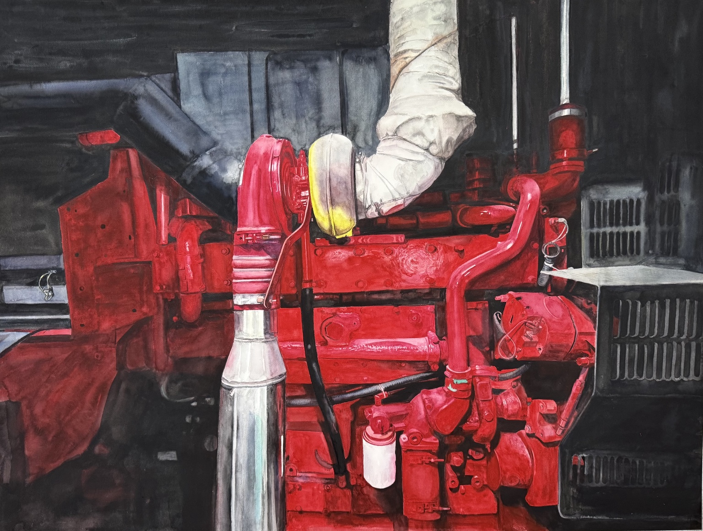

Red and Black
红与黑

- Artwork ID / 作品编号
- KW-W-000039
- Year / 年份
- 2026
- Medium / 媒介
- Watercolor on paper / 纸本水彩
- Dimensions / 尺寸
- 86 × 112 cm (H × W / 高 × 宽)
About the work / 作品介绍
Vivid red pipes and machine parts emerge from a dark ground. Pale wrapping and reflective metal introduce another set of relationships within the composition. The watercolor gives the machinery a sense of weight while drawing the eye between red, black and pale gray.
鲜红的管道与机件从深色背景中显现，灰白的包裹和金属表面又在红、黑之间形成另一组关系。作品以水彩保留机械结构的重量，也让观看在红、黑与灰白之间移动。